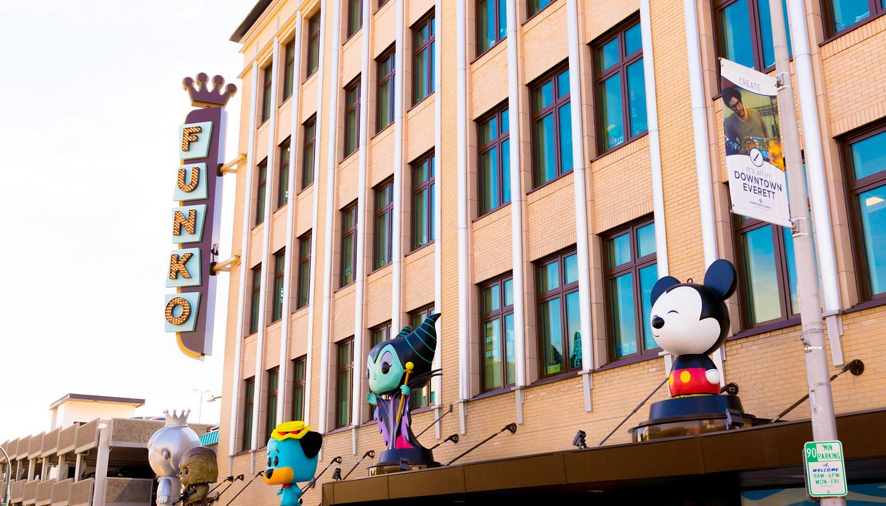
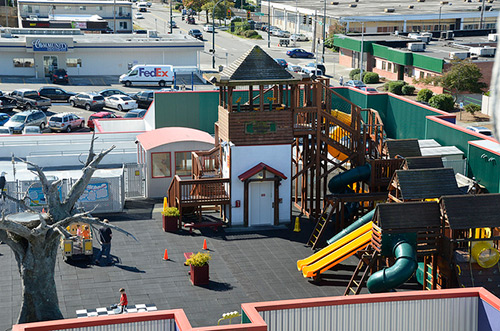
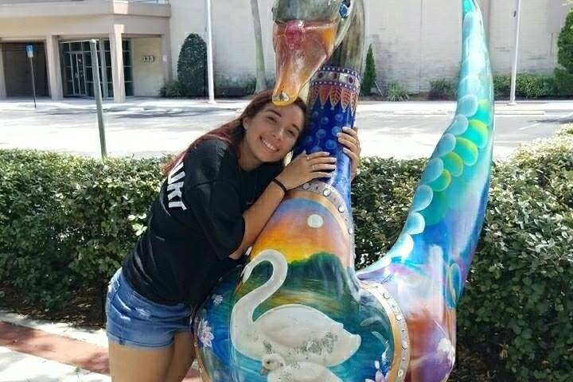

Everett has many attractions that bring people from far and wide to marvel at their beauty. It’s a great place to explore, as it brings together many beautiful things with interesting attractions galore. People love visiting the many attractions here. From gardens to museums, Everett is filled with fun things for everyone, from the littlest children to the elderly!
-From the creators of "Everett and Me"
THE FUNKO HEADQUARTERS
The Funko Headquarters is an 17,000 square foot immersive experience. It’s a fun place where collectors and children will enjoy themselves. There are many exclusive Funko Pops there that rotate year-round. This attraction celebrates pop culture with areas dedicated to popular franchises such as Star Wars, Harry Potter, and Disney. It’s a great place to stop by if you are a collector, a fan of the companies, or just looking for a fun afternoon activity.


IMAGINE CHILDREN’S MUSEUM
The Imagine Children’s Museum is an interactive kids museum, perfect for all ages. It has many interactive exhibits designed for kids 1-12, although adults report having fun as well. The exhibits are meant to help children play, learn, and discover in a fun space. It’s where wonder and curiosity come to life, with adventure and fun mixed in. It helps open young minds to the beauty of science, tech, art, history, and more! Due to a recent expansion, it now has 4 floors and over 50,000 square feet of fun.
OPERATION CITY QUEST SCAVENGER HUNT
The Operation City Quest Scavenger Hunt in Everett is a fun adventure for all ages that involves trying to find items using riddles. By solving riddles and completing challenges from a convenient app on your smartphone, you’ll be led around the city, guided by remote “Host” helping you find your way. It’s a great way to spend a couple of hours and explore Everett and its surrounding buildings, nature, and more!

BOEING FUTURE OF FLIGHT
ANGEL OF THE WINDS COMMUNITY ICE RINK
Angel of the Winds Community Ice Rink is a fun attraction in Everett because it offers year-round, accessible ice sports and recreation, a welcoming atmosphere for all ages and skill levels, and a hub for community events and family outings. Visitors can enjoy public skating, themed skate nights, hockey games featuring the Everett Silvertips, and skating lessons in a well-maintained, clean, and engaging environment.